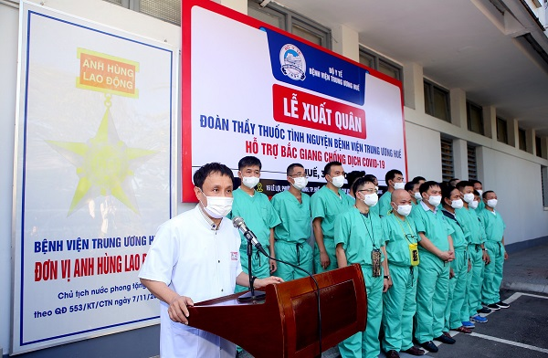

Theo thông tin của Cục Khoa học công nghệ và Đào tạo, Bộ Y tế tính đến chiều ngày 31/5, tổng số cán bộ, giảng viên, sinh viên lên đường tham gia hỗ trợ phòng chống dịch COVID-19 tại Bắc Ninh và Bắc Giang là 2.743 người gồm lực lượng y bác sĩ, kỹ thuật viên, điều dưỡng… đến từ nhiều bệnh viện, viện và y tế các tỉnh, thành phố; sinh viên các trường Đại học, Cao đẳng y dược và lực lượng y tế quân y, công an.
Trong đó, đợt 1 từ trước ngày 24/5 là 1.976 người; đợt 2 từ ngày 27-30/5 là 367 người; đợt 3 – ngày 31/5 là 400 người là cán bộ, chuyên gia, học viên, sinh viên của Trường Đại học Y Hà Nội, Đại học Y Dược Thái Bình và Trường Cao đẳng Y tế Hà Nội sẽ hỗ trợ tỉnh Bắc Ninh: 50 người (Trường Đại học Y Hà Nội); Hỗ trợ tỉnh Bắc Giang: 350 người (gồm Trường Đại học Y Dược Thái Bình là 70 người; Trường Cao đẳng Y tế Hà Nội là 280 người).
GS.TS Phạm Như Hiệp, Giám đốc Bệnh viện Trung ương Huế: Bệnh viện cử thầy thuốc có kinh nghiệm trong điều trị bệnh nhân COVID-19
Cùng đó, tổng số cán bộ, giảng viên, học viên và sinh viên ngành y dược đăng ký sẵn sàng tiếp tục lên đường tham gia hỗ trợ phòng chống dịch COVID-19 tại Bắc Giang, Bắc Ninh là 1.355 người.
Cục Khoa học công nghệ và Đào tạo cũng cho biết thêm, sau lời kêu gọi của GS.TS Nguyễn Thanh Long- Bộ trưởng Bộ Y tế, đến nay, đã có 24.413 cán bộ, giảng viên, học viên và sinh viên của 38 trường Đại học, Cao đẳng ngành y dược đăng ký tình nguyện tham gia phòng chống dich COVID-19 tại điểm nóng Bắc Ninh, Bắc Giang.
Theo Bộ trưởng Bộ Y tế Nguyễn Thanh Long đây là đợt huy động tổng lực nhân lực y dược đông nhất, lớn nhất trong cả nước nhằm hỗ trợ ngành y tế Bắc Ninh, Bắc Giang chống dịch.
Cùng đó, các chuyên gia đầu ngành về điều trị trong cả nước của Tiểu ban điều trị- Ban Chỉ đạo Quốc gia phòng chống dịch COVID-19 và Hội đồng chuyên môn đã thường xuyên, liên tục hội chẩn trực tuyến các ca bệnh nặng, dồn tâm sức để bàn thảo, đưa ra phương án điều trị phù hợp nhất cho người bệnh.
Liên quan đến công tác điều động nhân lực hỗ trợ hai tỉnh Bắc Ninh và Bắc Giang trong công tác tiêm chủng vắc xin COVID-19, sáng nay- 31/5, Bệnh viện Bạch Mai và Trường Cao đẳng y tế Bạch Mai tiếp tục tập huấn online về công tác tiêm chủng vắc xin cho 1000 sinh viên năm cuối tình nguyện đến Bắc Giang và Bắc Ninh.